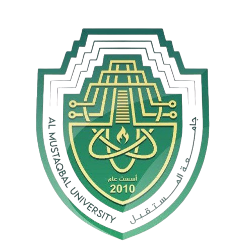

© جميع الحقوق محفوظة — تصميم حسن علاء (it7asan)
تهانينا!
الفريق الفائز
0
النقاط
0
إجابات صحيحة
0
النقاط
0
إجابات صحيحة
العب مرة أخرى
🔄
مسابقة المعلومات

اختر عدد اللاعبين
👤
لاعب واحد
👥
لاعبين
اختر فئة الأسئلة
💻
البرمجة
📱
التكنولوجيا
🌱
الاستدامة
🌍
البيئة
🏥
معلومات طبية
🏛️
التاريخ
⚽
الرياضة
🌎
معلومات عامة
أدخل أسماء الفرق
ابدأ المسابقة
🚀
إعادة اللعب
🔄
الفريق الأول
0
30
سيتم عرض السؤال هنا
التقدم
0/5
0
إجابات صحيحة
0
إجابات خاطئة
الفريق الثاني
0
30
سيتم عرض السؤال هنا
التقدم
0/5
0
إجابات صحيحة
0
إجابات خاطئة